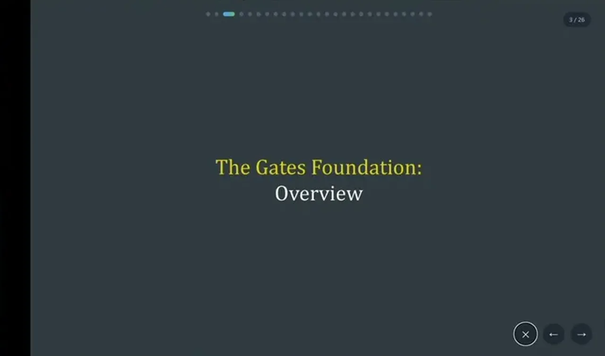
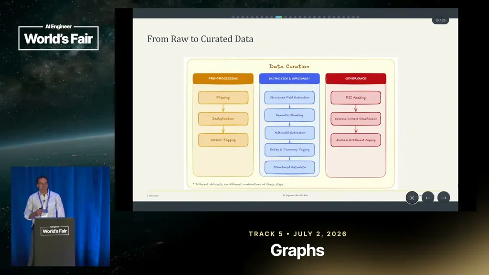
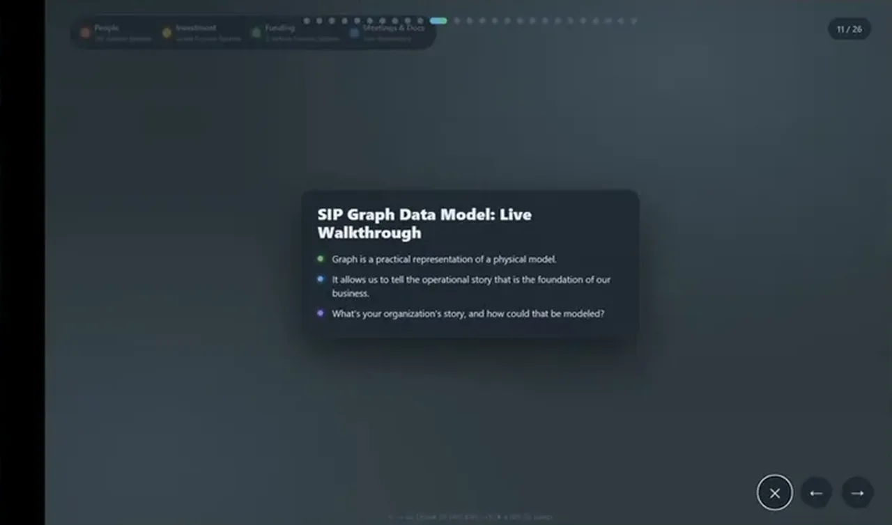

Your Moat Is Your Data Model
If you only read one thing
- The claimed durable moat is tacit process knowledge modeled into a knowledge graph (the Strategic Intelligence Platform, SIP), not the chat interface, which is treated as replaceable (c1, c9).
- SIP models a large, real operational dataset (over 2,000 grants/year, 4,000 employees, over $7 billion annual disbursement) as a graph with multiple hierarchies (funding, management, people) plus governance steps like PII masking before ingestion (c2, c3, c4, c5, c6).
- Evaluation uses per-question graph queries compared against live data, measuring pass@1 and stability, with most remaining failures traced to ambiguous rather than wrong answers (c7, c8).
Phipps frames the talk around what's actually defensible as frontier models keep improving: not the chat interface or the model itself, but the team's modeled understanding of internal processes and tacit knowledge needed to run the organization's AI correctly, embodied in what they call the Strategic Intelligence Platform (SIP), which rolled out in production across the Gates Foundation the prior month.
“our moat here was our understanding of our internal processes the tacet knowledge that you need to to run successful AI”
▶ watch at 01:33
To ground the scope, Phipps cites Gates Foundation operational figures for 2023: over 2,000 grants issued in one year, roughly 4,000 employees, and total annual disbursement exceeding $7 billion. This structured and unstructured operational history spans 25-plus years and is what SIP is built to make queryable at scale.
“it rolled out here this past month in production for enterprise use across uh the Gates Foundation. So about 4,000 people”
▶ watch at 02:36“So you have over 2,000 grants in one year”
▶ watch at 03:40“the total annual dispersement over 7 billion dollars”
▶ watch at 04:11
Before data becomes part of the semantic graph, it goes through preprocessing, deduplication, structured field extraction, and semantic chunking, followed by a governance pass. Sensitive fields like PII must be masked, sensitive data classified, and entitlements set correctly per user before that data is queryable by an agent.
“So things like PII need to be masked. you need to reconsider different uh sensitive data classifying this”
▶ watch at 07:49
The graph's entry point is over 80 strategy teams whose annual reviews drive yearly budgeting; from there the model builds out separate but connected hierarchies for funding (teams to portfolios to investments), management (direct and indirect team attribution), and people (org charts, meeting attendees, roles), stitched together with a document layer of meetings and their semantic chunks.
“we have over 80 different strategy teams. These teams have annual reviews that happen. This is how the budgeting for each year is derived”
▶ watch at 08:50
The graph is exposed to agents through a modified, forked version of an off-the-shelf Neo4j MCP server, with schema and state-passing changes layered in, serving both general chat and more constrained workflow experiences. Evaluation pairs targeted questions built with data owners against live graph queries, measuring pass@1 and answer stability, with most remaining misses traced to genuine ambiguity in the question rather than an outright wrong answer.
“Here we've actually modified these quite a bit here. We forked it”
▶ watch at 16:10“We've modeled things like pass at one uh stability. So if you ask the same question multiple times, you get the same answer back, you can use LLM as a judge to to to measure this”
▶ watch at 18:15“the the questions that we that we end up do missing, it tends to be things that are ambiguous in some way”
▶ watch at 18:47
Commentary (ours)
Phipps gives real scale numbers for the underlying data (grants, headcount, disbursement) but no eval pass@1 or stability percentage is stated in the talk itself, only that the system 'got this very very strong,' so the actual eval performance is asserted rather than quantified here (ours).


Underlying detail — every claim, typed and timestamped (9)
| Stance | Claim | t |
|---|---|---|
| asserts | The team's competitive advantage and durable moat is their modeled understanding of internal processes and tacit knowledge, not the model or interface. | 01:33 |
| asserts | SIP rolled out in production the prior month for enterprise use across the Gates Foundation, covering about 4,000 people. | 02:36 |
| asserts | The foundation issues over 2,000 grants in a single year. | 03:40 |
| asserts | Total annual disbursement across the foundation's grants exceeds $7 billion. | 04:11 |
| recommends | Sensitive fields like PII must be masked and entitlements set correctly for each user before data becomes part of the queryable graph. | 07:49 |
| asserts | The graph's entry point is over 80 strategy teams whose annual reviews determine yearly budgeting. | 08:50 |
| asserts | The team forked and modified an off-the-shelf Neo4j MCP server to add schema changes and pass conversation state. | 16:10 |
| recommends | Evaluation uses pass@1 and stability (repeating the same question and checking for the same answer) measured with an LLM as judge. | 18:15 |
| asserts | Most of the questions the system still misses are ones that are ambiguous, not straightforwardly wrong. | 18:47 |
Machine-readable copy embedded in this page (script#ontology) and in the corpus ontology.